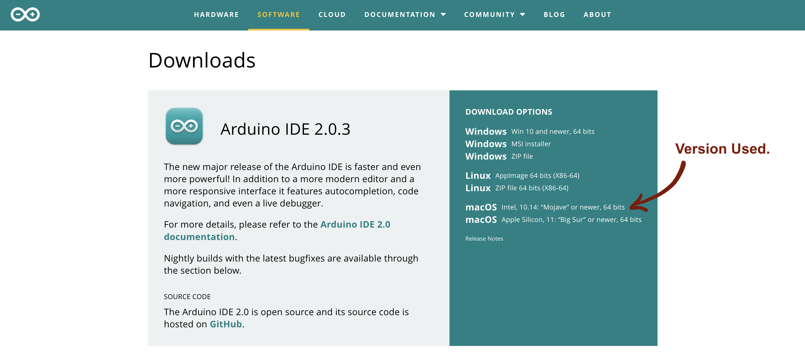

Mariya Sokolova
My name is Mariya Sokolova and I am an Electrical and Computer Engineering student at Cornell University graduating in December 2023. I have a wide variety of interests and I’m always eager to explore anything that intrigues me, including robotics, micorelectronics, or lasers to name a few. I'm also an artist, and I really enjoy using my creative skills to help me find unique solutions to engineering problems!
Lab 1
Artemis.
The primary objective of Lab 1 is to serve as an introduction to the Artemis Nano board and the Arduino IDE. The Artemis Nano is a development board created by Sparkfun Electronics to use in small-scale projects. In ECE 4160, Artemis is programmed using Python and the Arduino IDE. The lab involves installing the Arduino software and learning how to set up and use the Artemis board by running a handful of example programs on it.
Materials:- 1 x SparkFun RedBoard Artemis Nano
- 1 x USB C-to-C or A-to-C cable
- SparkFun RedBoard Artemis Nano Product Page: https://www.sparkfun.com/products/15443
- Arduino IDE Download Page: https://wiki-content.arduino.cc/en/software
- Artemis Setup Tutorial: https://learn.sparkfun.com/tutorials/artemis-development-with-arduino?_ga=2.30055167.1151850962.1594648676-1889762036.1574524297&_gac=1.19903818.1593457111.Cj0KCQjwoub3BRC6ARIsABGhnyahkG7hU2v-0bSiAeprvZ7c9v0XEKYdVHIIi_-J-m5YLdDBMc2P_goaAtA4EALw_wcB
The first step of the process was to complete the prelab, which involved installing the Arduino IDE onto the computer being used for the lab. When you go to the Downloads page on the Arduino website, there are several versions of the software available for different operating systems. I used macOS with an Intel processor, so that is the version that I installed.
Once the software was downloaded, it was time to set everything up according to the instructions referenced under “Resources” in the Introduction. First, I connected the Artemis board to my computer using a USB-C. Next, I opened the IDE and installed the SparkFun Apollo3 package. This package contains source files, libraries, and other tools that would allow me to use the Arduino software with Artemis. Once that was done, I could select the Artemis Nano board from the newly available board options.

Now that everything was set up, it was time to gain familiarity with the Artemis board by testing out a few example programs available on the IDE as well as some Artemis-specific examples from the SparkFun package. The examples that were used for this lab were “Blink it Up” from the IDE and “Example2_Serial”, “Example4-analogRead”, and “Example1_MicrophoneOutput” from the package.
The importance of Lab 1 was to allow students to gain some basic knowledge and skills for the Artemis Nano board and the Arduino IDE. This experience provides a smooth transition into more complex projects because it ensures that the board works properly for simple tasks. Moreover, it demonstrated some capabilities of the Artemis board that could be applied to future Labs in ECE 4160.